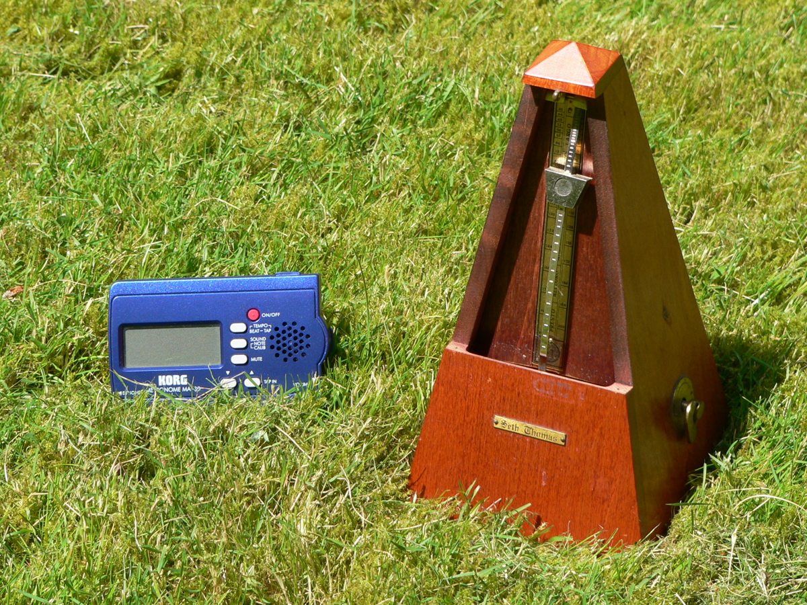

Музыка · 8-бөлім · Метр Music · Section 8 · Meter Музыка · Раздел 8 · Метр
⏱ Музыка сағат тілінше біркелкі соғады: күшті және әлсіз үлестер кезектеседі. ⏱ Music beats evenly like a clock: strong and weak beats alternate. ⏱ Музыка пульсирует ровно, как часы: сильные и слабые доли чередуются.
Үлес (доля) — музыканың біркелкі пульсі: сағаттың тық-тығы немесе жүректің соғуы сияқты. A beat is the steady pulse of music — like the ticking of a clock or a heartbeat. Доля — это равномерная пульсация музыки, как тиканье часов или биение сердца.
Үлестер күшті (екпінмен, ауыр) және әлсіз (екпінсіз, жеңіл) болады. Beats can be strong (accented, heavy) or weak (unaccented, light). Доли бывают сильные (с акцентом, ударные) и слабые (без акцента, лёгкие).
Күшті және әлсіз үлестердің біркелкі кезектесуі — бұл метр. The even alternation of strong and weak beats is called meter. Равномерное чередование сильных и слабых долей — это метр.
💡 Күшті үлес «ауырырақ» естіледі — оны қолмен шапалақтап немесе аяқпен басып сезінуге болады. 💡 A strong beat sounds "heavier" — you can feel it by clapping your hands or tapping your foot. 💡 Сильная доля звучит «тяжелее» — её можно почувствовать, хлопая в ладоши или притопывая ногой.
Үлкен күлгін шеңбер — күшті үлес (екпінмен); кіші сұр шеңбер — әлсіз үлес. Тік сызық — такт сызығы. A large violet circle is a strong (accented) beat; a small grey circle is a weak beat. The vertical line is a barline. Большой фиолетовый круг — сильная (ударная) доля; маленький серый — слабая доля. Вертикальная линия — тактовая черта.
📏 Такт (measure) Measure (bar) Такт (measure)
Такт — музыканың бір күшті үлестен келесі күшті үлеске дейінгі бөлігі. Әр такт күшті үлестен басталады. A measure is a piece of music from one strong beat to the next. Every measure starts on a strong beat. Такт — это отрезок музыки от одной сильной доли до следующей сильной доли. Каждый такт начинается с сильной доли.
│ Такт сызығы (barline) Barline Тактовая черта (barline)
Такт сызығы — тактарды бөлетін тік сызық. Ол әрқашан күшті үлестің алдына қойылады. A barline is the vertical line dividing measures. It is always placed before a strong beat. Тактовая черта — вертикальная линия, разделяющая такты. Она ставится перед сильной долей.

| ҰғымTermПонятие | Бұл неWhat it isЧто это |
|---|---|
| ҮлесBeatДоля | музыканың біркелкі пульсіthe steady pulse of musicравномерная пульсация музыки |
| Күшті үлесStrong beatСильная доля | екпінді, «ауыр» үлесan accented, "heavy" beatдоля с акцентом, «тяжёлая» |
| Әлсіз үлесWeak beatСлабая доля | екпінсіз, «жеңіл» үлесan unaccented, "light" beatдоля без акцента, «лёгкая» |
| ТактMeasureТакт | бір күшті үлестен келесісіне дейінгі бөлікfrom one strong beat to the nextотрезок от одной сильной доли до следующей |
| Такт сызығыBarlineТактовая черта | тактарды бөлетін тік сызық, күшті үлестің алдындаa vertical line dividing measures, before a strong beatвертикальная линия между тактами, перед сильной долей |
📌 Метр — күшті және әлсіз үлестердің біркелкі кезектесуі; ол музыкаға реттілік пен «жүрісті» береді. 📌 Meter is the even alternation of strong and weak beats; it gives music its order and "stride". 📌 Метр — равномерное чередование сильных и слабых долей; он придаёт музыке порядок и «поступь».